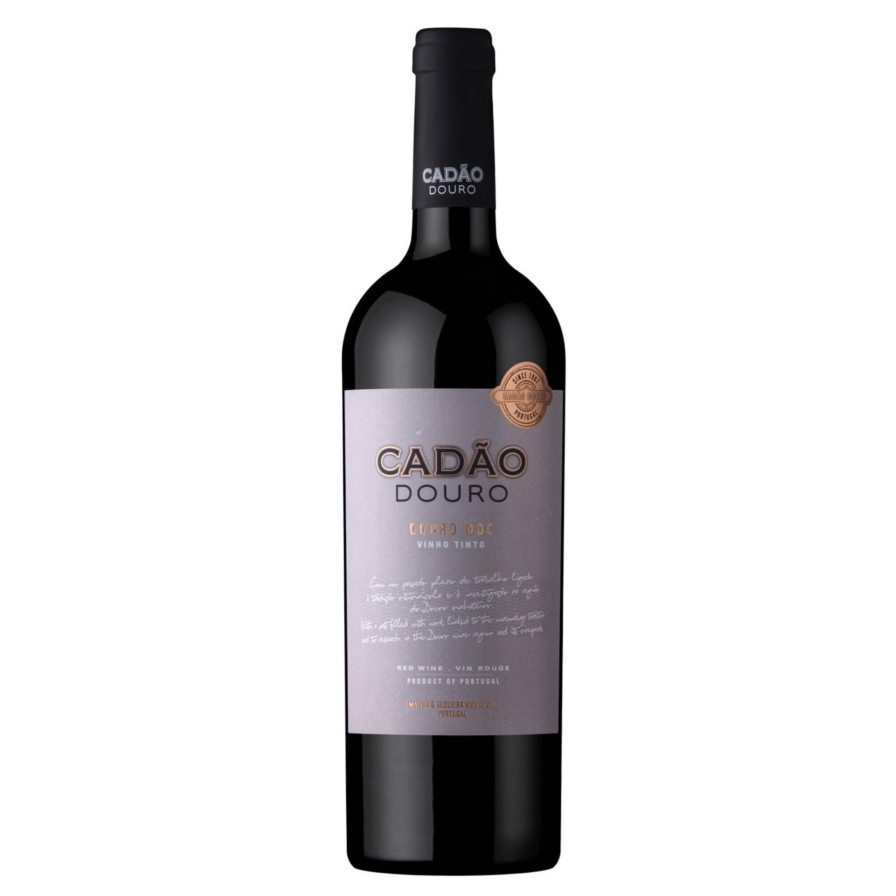
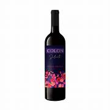

Vinho Tinto
O vinho tinto é um dos mais apreciados no mundo, conhecido por sua cor rubi intensa, taninos marcantes e aromas que podem variar de frutas vermelhas frescas a notas amadeiradas, dependendo da uva e do processo de envelhecimento. Ele é resultado da fermentação das uvas junto com as cascas, o que garante sua cor profunda e caráter robusto.
Versátil, o tinto pode ser degustado em diferentes momentos: desde encontros descontraídos até ocasiões especiais. Harmoniza bem com carnes vermelhas, queijos curados e massas com molhos encorpados. Cada safra e cada variedade de uva revelam novas nuances, fazendo do vinho tinto uma escolha clássica e inesquecível.
 